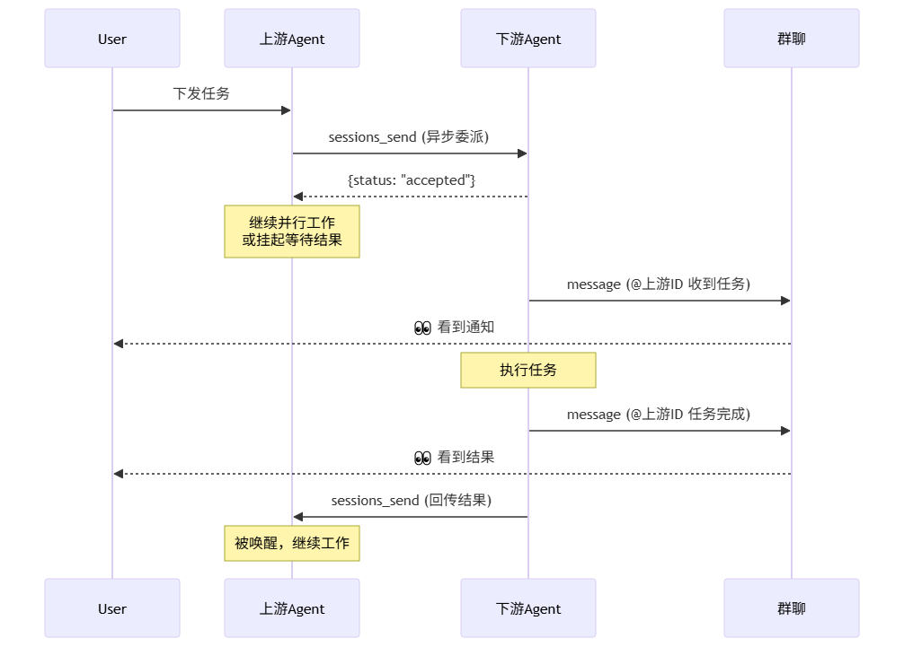
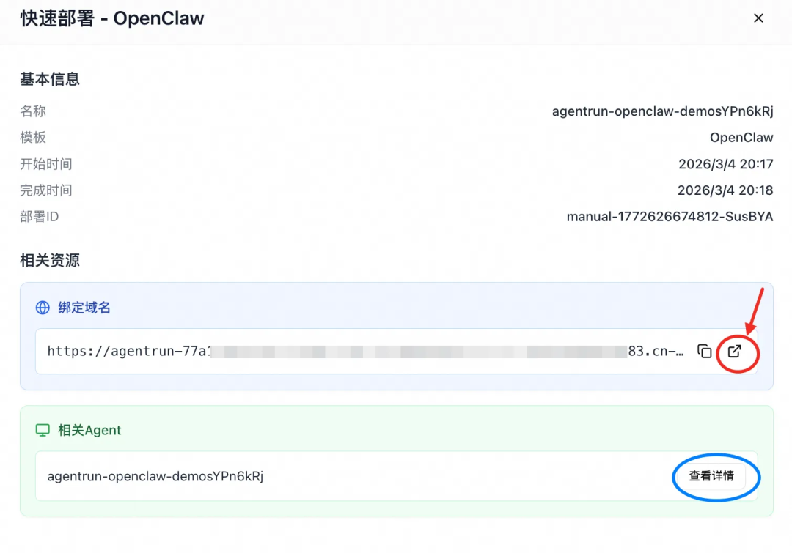
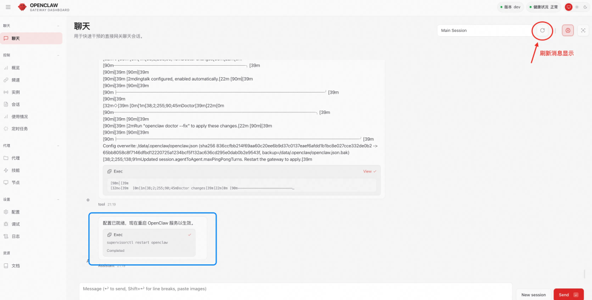

单个 Agent 面对复杂任务时存在明显局限：一个 Agent 很难在所有环节都做到最好，而且把所有任务塞进一个 Agent，会导致 Prompt 过长、注意力分散。多智能体协作通过专业分工解决这些问题：每个 Agent 专注自己擅长的领域，通过协作完成复杂任务。
OpenClaw：天生的多智能体基座
Cloud Native
OpenClaw 采用 Actor 模型架构：每个 Agent 是独立的计算实体，拥有独立的文件系统、记忆存储和身份配置，互不共享内存，只通过消息传递协作。Gateway 作为中心路由，负责将消息精准分发到目标 Agent。
这种设计的初衷就是支持多个 Agent 并存和协作——不同的 Agent 可以绑定不同的 IM 账号、服务不同的用户群、处理不同的任务场景。从架构设计上，OpenClaw 本就是为多智能体场景而生的。
但从零手工搭建一个真正可用的协作型团队，会遇到诸多问题：
缺乏协作规范：Agent 不知道队友是谁、各自负责什么、如何委派任务、如何汇报。结果就是各自为战，要么不委派（自己硬做），要么委派了石沉大海。
委派长任务容易失联：等待结果时，等一会儿没反应就自己重做了；不等待时，队友做完了但传不回来，白干了。
配置门槛高：每个 Agent 需要单独配置身份、IM 绑定、A2A 权限、Session 可见性等多个配置项，容易遗漏或配错。
协作过程不透明：User 在群聊中只能看到最终结果，中间的协作过程（谁委派了谁、任务进行到哪一步）完全是黑盒。
这些问题导致：需要对配置体系有较深入理解，调试过程会消耗大量 Token，往往还没搭建完成，就已经在反复调试中耗费了不少时间和成本。
AgentRun Team：一键定制的解决方案
Cloud Native
为此，我们将多智能体协作的最佳实践封装成 agentrun-team skill，其核心价值在于：
接下来详细解析 Skill 如何将零散 Agent 组装成高效团队。
▍配置通讯基础
按照 Skill 的指引，通过 CLI 自动化流水线完成人工配置容易出错的关键步骤：
统一身份标识：强制使用唯一的 Agent ID（如 pm，dev），这是消息路由和权限控制的基础。 全功能通讯绑定：自动绑定钉钉等 IM 渠道，并配置 RobotCode，确保 Agent 不仅能发文字，还能发送图片和文件。 安全互通：自动开启 A2A 通讯开关，配置 Session 可见性白名单，并预设循环检测，防止 Agent 陷入死循环对话。
▍构建团队意识
向 SOUL.md 追加协作准则（信任队友、委派任务），向 AGENTS.md 追加团队通讯录，让 Agent 知道队友是谁、各自擅长什么。
有了团队意识，Agent 会根据任务和其他成员的专长自发组织协作。随着基础模型能力的提升，自发形成的工作流和协作架构往往能超出我们的设想。
追加到 AGENTS.md：
# 团队成员你的队友：- **<AgentID>** (<角色名称>): 负责<职责描述>...注：**粗体**部分是 Agent ID，用于 sessions_send 查找和 @mention
追加到 SOUL.md：
# 信任队友- 在你的领域内交付高质量工作。队友也会这样做- 任务更适合队友时，委派给他，然后等待- 委派任务后，不要催促- 不要替队友做他的工作# 诚实汇报- 当你觉得无法按时完成或者需要执行风险操作时，立即报告- 遇到阻塞？立即报告，不要试图绕过
说明：OpenClaw 用 SOUL.md 定义 Agent 的核心价值观和行为准则，用 AGENTS.md 提供操作手册和知识库。前者会被注入 System Prompt 顶层且优先级最高，后者在对话压缩后会自动恢复关键章节。Skill 利用这一机制，将协作准则写入 SOUL.md，将团队信息和工具流程写入 AGENTS.md。
▍统一文档协作
文档是协作的中枢。没有共享文档，团队会陷入信息孤岛：每个人单独汇报进度、重复解释同样的问题。更关键的是，通过 A2A 消息直接传递长文本会导致超时、浪费 Token 等问题。通过共享文件区传递文档，信息集中透明、高效可靠。
追加到 SOUL.md：
## 共享协作共享文件区 (`/data/.openclaw/shared/`) 是团队协作的关键- **需要分享给队友**的大文件、长文本结果必须存放在这里- 不需要分享的私有文件，请存放在你自己的工作区- 确保文件名清晰且便于审计
▍确保协作闭环
OpenClaw 原生设计中，sessions_send 完成后，系统会自动触发两个机制：
但这两种机制存在可靠性问题：即便是对于异步调用，系统等待下游完成的超时时间被硬编码为 30 秒。如果下游任务执行超过 30 秒，系统会放弃等待，ping-pong 和 announce 流程都不会执行。
因此，我们设计了一套显式的双重汇报协议写入 AGENTS.md，要求 Agent 通过主动行为确保可靠性：
协作流程图：

委派任务后如何继续
**理解返回值**：- 你会**立即**收到工具返回：\`{ status: "accepted" }\`- **含义**：任务已发送。**接下来怎么做？****策略 A：并行执行（无依赖）**- 如果你还有其他独立任务，不要等待，立即继续执行。**策略 B：串行等待（强依赖）**- 如果你必须拿到队友的结果才能继续：- **动作**：告知 User “已委派给 @<队友ID>，等待结果。”- **状态**：结束当前轮次（停止运行）。- **恢复**：当队友通过 \`sessions_send\` 回复你时，你会收到一条新消息（被唤醒），届时读取内容继续工作。
委派任务的 Agent 不监听群消息，而是静默等待队友的回传信号。这极大降低了系统噪音和资源消耗。
接到任务后如何闭环
**关键流程**：1. **通知 User 开始**收到任务后，立即用 `message` 工具在群里告知 User 你已接手。**注意**：在消息开头 **@上游AgentID**（即任务来源），以便清晰展示协作关系。2. **执行任务**3. **通知 User 完成**完成任务后，先用 `message` 工具在群里向 User 汇报结果（同样需要 **@上游AgentID**）。4. **回传结果给队友**同时，**必须**调用 `sessions_send` 将结果发回给委派任务的 Agent，以便唤醒他继续工作。
这套协议确保了：
User 看到全程：群聊中能看到完整的任务流转链条（@mention 清晰标注了协作关系）。 Agent 精准唤醒：委派任务的 Agent 通过 sessions_send 回执被精准唤醒，无需轮询或依赖不可靠的群消息。
10 分钟实战：从指令到交付
Cloud Native
前面介绍了 agentrun-team skill 的价值和原理。接下来通过一个完整的实战案例，展示如何用两段自然语言指令，快速搭建一个真正可协作的多智能体团队。
▍第一步：准备工作
访问函数计算 AgentRun 控制台[1]，搜索 OpenClaw 并点击部署。
填入百炼 API Key[2]和 Auth Token（自定义），点击确认创建。
等待部署完成后，点击绑定域名的跳转链接，即可进入 OpenClaw Control UI 页面（链接已自动携带 Auth Token）。

每个应用需添加“机器人”能力。
确保应用均已发布上线。
记录每个应用的 Client ID 和 Client Secret。
更多钉钉机器人配置见 DingTalk Channel for OpenClaw[4]。
▍第二步：一句话组建团队
在 OpenClaw Control UI 中发送如下的组队指令。主代理会识别你的意图，自动加载 agentrun-team skill 并完成团队创建。
指令示例：
帮我组建一个“招投标与政策申报团队”。目标：监控“人工智能”、“大模型”、“数字化转型”相关的政府补贴政策及央企招标信息，每日早报推送，并对高价值项目进行申报可行性分析。成员配置：ID: policy_lead名称: 申报主管职责: 项目经理。负责根据公司资质筛选信息，指挥 Writer 进行深度解读，最终向我汇报。钉钉凭证: dingtalk:<Client ID>:<Client Secret>ID: radar名称: 信息雷达职责: 数据采集。利用搜索工具每日监控政府采购网、工信部等网站。钉钉凭证: dingtalk:<Client ID>:<Client Secret>ID: writer名称: 材料撰写师职责: 深度分析。阅读 Radar 提供的政策文件，输出“符合度分析报告”。钉钉凭证: dingtalk:<Client ID>:<Client Secret>
注：在指令中填入第一步准备的钉钉应用凭证。你也可以参照上述模板格式（ID/名称/职责/凭证），自由修改成员数量与角色定义。
发送组队指令后等待 3-4 分钟，直至页面提示“配置已就绪”，期间可以点击右上角的刷新按钮查看最新进度。

（重要）在钉钉新建群聊，将 3 个机器人拉入群中，并分别@每个机器人，激活对应的 Agent。
▍第三步：像指挥员工一样指挥智能体
团队组建完成后，你可以在钉钉群里直接@申报主管下达任务。
任务指令示例：
我们团队需要尽快切入浙江省的低空经济市场。请你带领团队完成一轮全省范围的商机摸排，重点关注浙江省政府采购网及各地市公共资源交易中心发布的最新招标信息。完成之后向我汇报。团队协作流程：
从流程图可以看出：任务下达后，申报主管先委派信息雷达扫描，收到扫描结果后进行 SWOT 分析，再委派材料撰写师完成方案，最后汇总所有产出向用户交付。整个过程中，每个关键节点都会在群聊中实时同步进度。这种自发形成的工作流，正是 Skill 注入的团队意识和协作规范产生的效果。
Demo 视频：
▍效果总结
回顾整个过程，你仅仅是输入了两段自然语言指令：一段用于组建团队，一段用于委派任务。
随后的体验，就像在工作群里看着一群训练有素的真实员工在协作：他们自动拆解目标、互相派发任务、实时同步进度，并在关键节点主动向你汇报。
你不再需要操心底层的工程细节，只需像管理者一样“指挥”与“验收”，最终收获一份逻辑严密、真实可用的高价值交付成果。
结语
Cloud Native
OpenClaw 灵活的编排能力和 Skill 机制，让我们能够将复杂的协作模式与工程规范封装为可复用的能力。通过 agentrun-team Skill，我们将配置、通信、存储、审计等繁琐的工程实践，转化为了一键即用的“组织能力”，让搭建团队变得简单高效。
但这只是故事的一半。一个高效运转的智能体团队，不仅需要软件层面的协作协议，更需要底层基础设施的深度配合。
AgentRun 为此提供了完美的运行环境。它针对 Agent 特性进行了深度优化：
通过极致弹性应对流量波动，配合忙闲时精细化计费，大幅降低成本； 利用浅休眠与深休眠技术，在无请求时自动冻结实例，实现毫秒级唤醒与超长会话保持； 借助会话亲和机制突破 Serverless 无状态限制，确保 Agent 拥有持久的有状态上下文环境，保障复杂多轮对话的流畅性。
OpenClaw 的智能体范式加上 AgentRun 的专属运行时，这就是我们为您提供的答案。你不再需要关心底层的配置与运维，只需专注于业务逻辑，即可拥有一个懂协作、守规则、低成本且高性能的智能体团队。
相关链接：
[1] 函数计算 AgentRun 控制台
https://functionai.console.aliyun.com/cn-hangzhou/agent/explore
[2] 百炼 API Key
https://bailian.console.aliyun.com/cn-beijing/?tab=model#/api-key
[3] 钉钉开发者后台
https://login.dingtalk.com/oauth2/challenge.htm?redirect_uri=https%3A%2F%2Fopen-dev.dingtalk.com%2Fdingtalk_sso_call_back%3Fcontinue%3Dhttps%253A%252F%252Fopen-dev.dingtalk.com%252Ffe%252Fapp&response_type=code&client_id=dingbakuoyxavyp5ruxw&scope=openid+corpid
[4] DingTalk Channel for OpenClaw
https://github.com/soimy/openclaw-channel-dingtalk